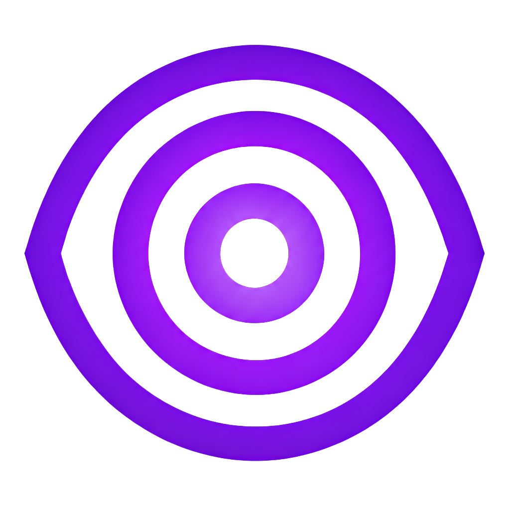

c'est ici
↑

Dernière étape
Ouvre la page
dans ton navigateur
TikTok bloque l'accès direct à l'App Store. Trois secondes et c'est réglé.
1
Appuie sur les trois points
•••
en haut à droite.
2
Choisis
Ouvrir dans le navigateur
.
3
L'App Store s'ouvre tout seul.
Télécharger Lucide sur l'App Store